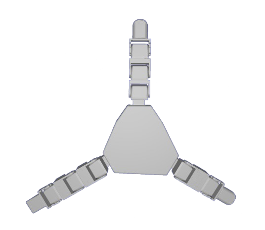
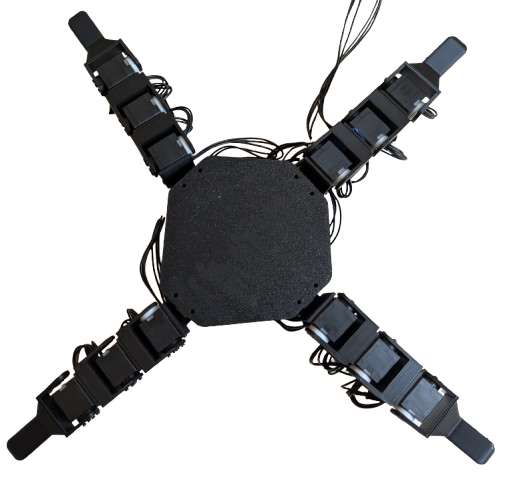
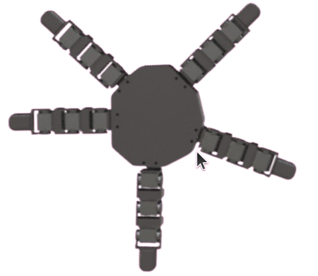
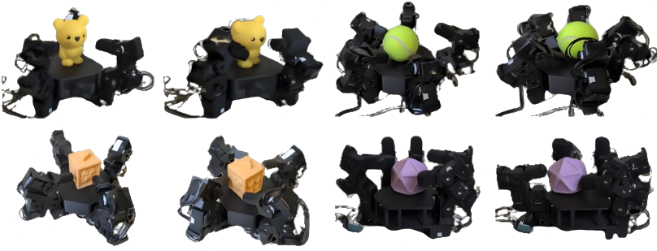
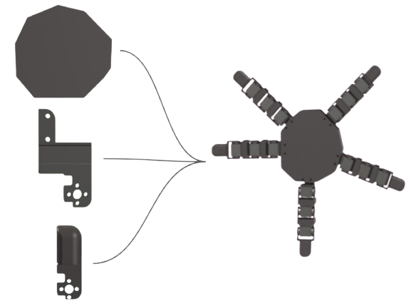
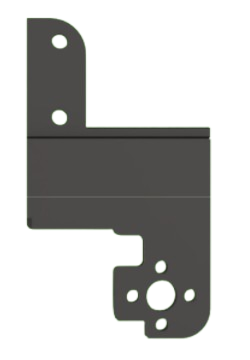
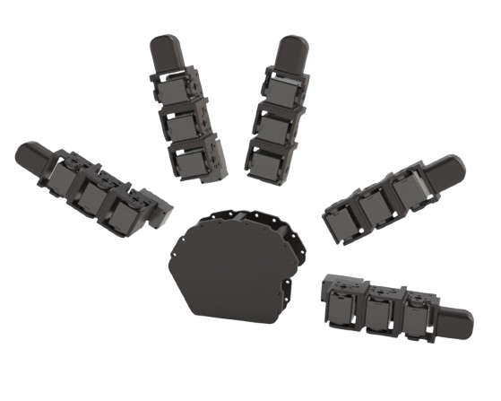
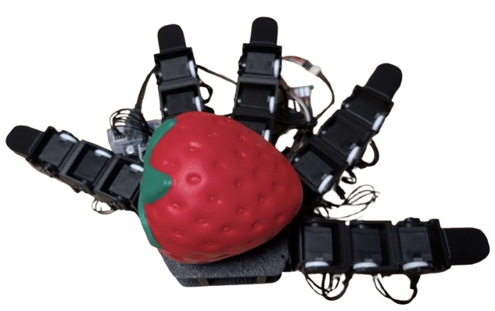
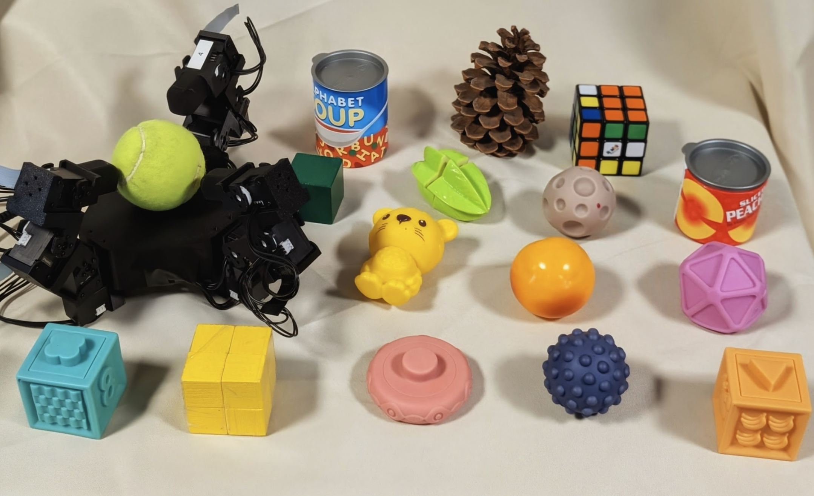

Overview — full build walkthrough
House of Dextra — Build Guide
You can build multiple hands from one platform. This guide covers how to build a modular robot hand and how to alter it to build similar hands. Every aspect of the hand is customizable: palm geometry, finger placement, link lengths, fingertip shape, degrees of freedom per finger, and total number of fingers. Mix and match any combination of these to suit your application.
All STL files, SolidWorks parts, and control code are available on GitHub.

3-finger variant

4-finger variant

5-finger variant

Built variants — hands manipulating real-world objects
Bill of Materials
Everything needed for the 5-finger baseline. Scale servo count down for fewer fingers: 16 for 4-finger, 12 for 3-finger, etc.
| Item | Qty | Price | Link |
|---|---|---|---|
| Robot Cable X3P 180mm (10 pcs) | 1 | $38.42 | Robotis ↗ |
| 3P JST Expansion Board | 2 | $13.80 | Robotis ↗ |
| Dynamixel XL330-M288-T Servo Motors | 20 | $549.80 | Robotis ↗ |
| U2D2 Power Hub Board Set | 1 | $21.85 | Robotis ↗ |
| U2D2 Communication Board | 1 | $36.92 | Robotis ↗ |
| 12V Power Supply | 1 | $16.49 | Amazon ↗ |
| Black PLA Filament | 1 | $22.99 | Bambu Lab ↗ |
| USB 3.0 Cable | 1 | ~$5 | Any |
| Total | $700.27 |
Additional tools: electrical tape, screwdriver kit, micro cutters (~$31). And a 3D printer that can print PLA.
Optional: HN-X330-N101 servo horns for each motor for extra-sturdy joints. We left one side free-floating with a printed spacer (Idler STL), which works fine.
Print Guide
Use PLA Basic with auto tree branching supports enabled. All STLs and SolidWorks source files are on GitHub.
- 1Palm
- 5Fingertips
- 15Servo Holders (connecting finger joints)
- 5Lever Holders (mounting fingers to palm)
- 15Servo Washers, Large
- 15Servo Washers, Small
In your slicer, select PLA Basic and enable tree(auto) support type with threshold angle ~30. When done, remove all supports with micro cutters before assembling.
Each component bolts together with four bolts or less. Customize any part by editing the SolidWorks source and exporting as STL. Daisy-chain up to 6 motors per finger; the included expansion board setup supports up to 6 fingers. Add another expansion board for up to 10.

Modular parts overview — palm, linkages, and mounts

5-finger expansion — modular part breakdown

Single finger — assembled servo chain

Fingertip — connects on top of lever

Mechanical linkages — top mount, middle slab, and bottom link. Alter the middle slab for custom finger lengths.
Assembly
Five fingers are assembled identically, then mounted to the palm. The process is the same for any hand variant.
-
00
Print all STLs
Print all parts listed in the Print Guide above before beginning assembly. Remove all supports with micro cutters. Have all printed parts, servo motors, cables, bolts, and tools ready before starting.
-
01
Mount the base servo
Connect one servo motor vertically to the L-shaped servo holder. This is the abduction motor that attaches the finger to the palm.
-
02
Build the finger chain
Bolt servos into each servo holder with the long side down and wire ports exposed. On the bottom, place the next servo in the same orientation, then bolt 4 bolts (included with the Dynamixel) onto the side with the servo horn.
-
03
Fit the washers
Snap one large and one small washer together (small inside large). Slide onto the free side of each servo in line with the lever. Leave free-floating, or use Dynamixel motor horns for a more rigid mount.
-
04
Attach the fingertip
Repeat the same washer and bolt process to mount the fingertip to the top of the finger.

Render of completed 5-finger hand
-
05
Repeat for all fingers
Repeat steps 01-04 for each finger in your chosen palm layout. The default hand uses 5 fingers. For a 3-finger hand repeat 3 times, for a 4-finger hand repeat 4 times, and so on. Each finger is assembled identically regardless of position on the palm.
3-finger palm layout
4-finger palm layout
-
06
Wire the fingers
Connect the wire from the Dynamixel box to the vertical base motor, then to the bottom port of the bottommost horizontal motor. Connect top to bottom up the chain. Secure wires with electrical tape.
-
07
Connect electronics
Connect four fingers to the expansion board (one wire each from the bottommost motor). Connect the fifth finger directly to the U2D2 board. Bolt the U2D2 communication hub to the U2D2 power board, then connect the expansion board to the U2D2 with one cable.
Order of finger connection and placement on the board does not matter — as long as all fingers are plugged in to the board, either directly or through the expansion board.

Completed anthropomorphic baseline hand

Completed 5-finger hand, front view
-
08
Power on
Check all wiring. Plug the power adapter into the U2D2 board and turn on.
⚠ Use 5V only for these motors. 12V will cause motor burnout.

Completed hand alongside the real-world object set used for manipulation testing
Deployment
Install Dynamixel Wizard 2.0, connect the U2D2 via USB 3.0, and run a scan.
-
ID each motor
Number motors 1-20 starting with the thumb's vertical motor as ID 1, working up and around each finger. Re-ID via the Options menu in Dynamixel Wizard.
-
Verify movement
Select each motor, enable the torque slider, and move the dial to confirm response. Debug non-moving motors by checking cable connections.
-
Tune PID values
Go to Options for each motor and tune proportional, integral, and derivative gains. Starting values are in
config/anthro_standard.yamlin the repo. -
Set joint limits
Record the servo tick at each desired mechanical limit and enter them as
limit_offsetsin the config file. Defaults are provided for the baseline hand. -
Run the test script
Clone the GitHub repo and run
python test.py. Each finger should wave inward and return to rest in sequence. If all fingers move, you are done.
How to Adapt
All components connect and disconnect the same way as the original assembly. To build your own hand, alter any of the SolidWorks files included in the repository. When the desired part is altered, combine it with a top and bottom link and reprint it as an STL. If altering the palm, copy the tolerances for motor mounting to the desired new locations.
- Add / remove fingersDo so in motor ID order to avoid re-IDing the remaining motors.
- Custom palmsCopy servo mounting bracket tolerances from the SolidWorks part onto any new geometry and export as STL.
- Custom fingertipsDesign any shape and connect on top of a lever. Soft, rigid, or sensored tips all attach the same way.
- Longer segmentsEdit the middle slab pieces in SolidWorks to any length, combine with top and bottom links, and reprint as STL. The bolting pattern stays the same.
- More fingersAdd another expansion board for up to 10 fingers total.
- Different materialsPETG for stiffer links, TPU for compliant fingertips.
Modular part variants — swap fingertip, linkage, and base components freely
Citation
If you use this platform in your research, please cite:
@article{fay2025crossembodied,
title = {House of Dextra: Cross Embodied Co-Design
for Dexterous Hands},
author = {Fay, Kehlani and Djapri, Darin and Zorin, Anya
and Clinton, James and El Lahib, Ali and Su, Hao
and Tolley, Michael T. and Yi, Sha
and Wang, Xiaolong},
journal = {arXiv preprint},
year = {2025},
month = {December}
}